★★★★★Highly rated bylocal homeowners
Everything you need to make a confident decision, in one place.
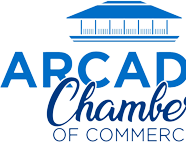
"The proposal was clear and they walked us through every line. No surprises, fair price, quality work."
"We compared three quotes. Green Ladder explained what the others left out. Glad we chose them."
"Second-generation family business. Honest, professional, and the roof looks fantastic."
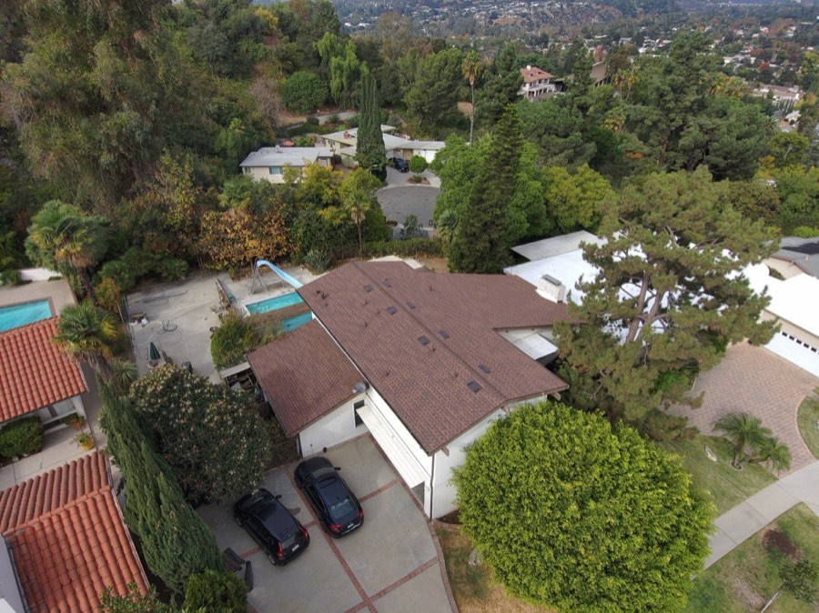
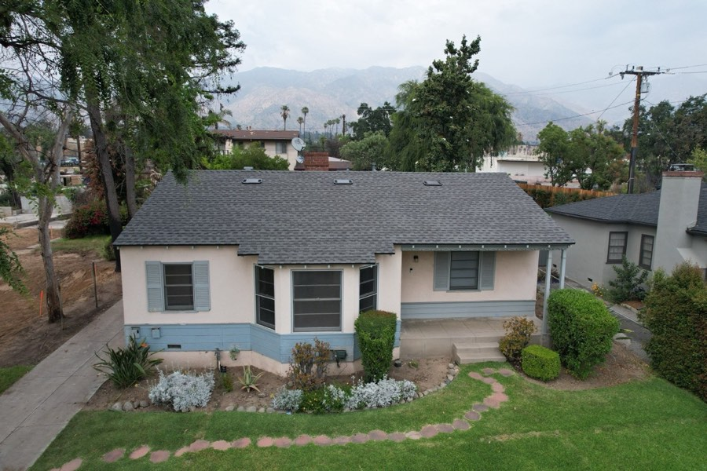
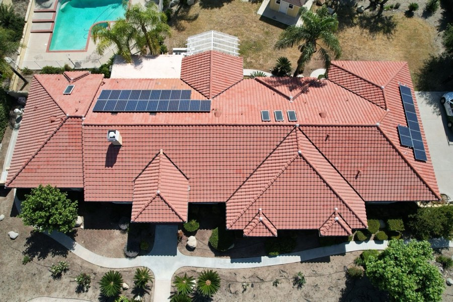
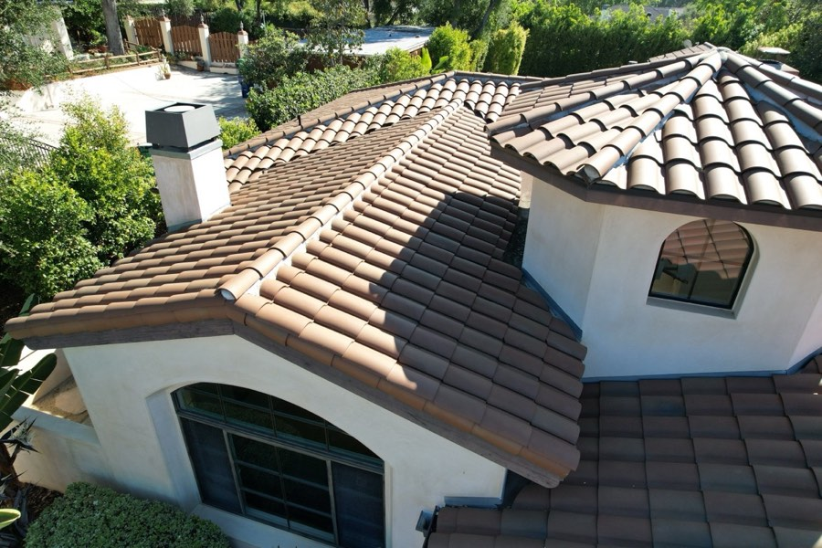
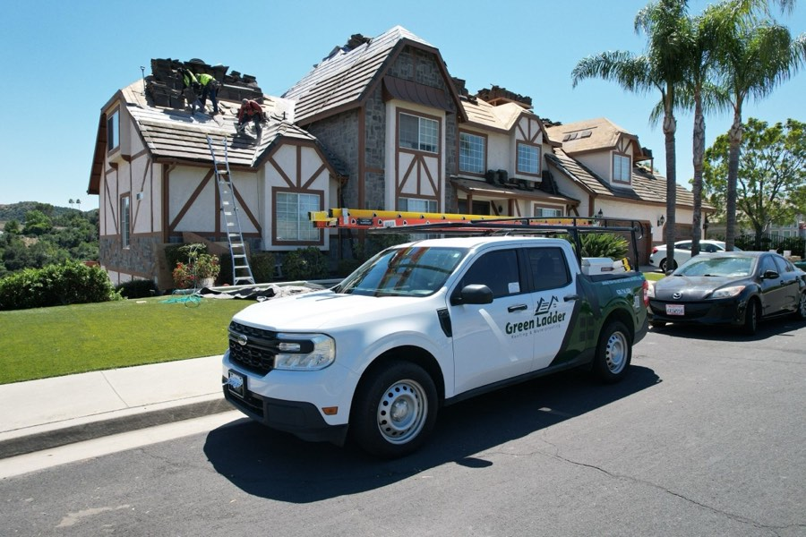
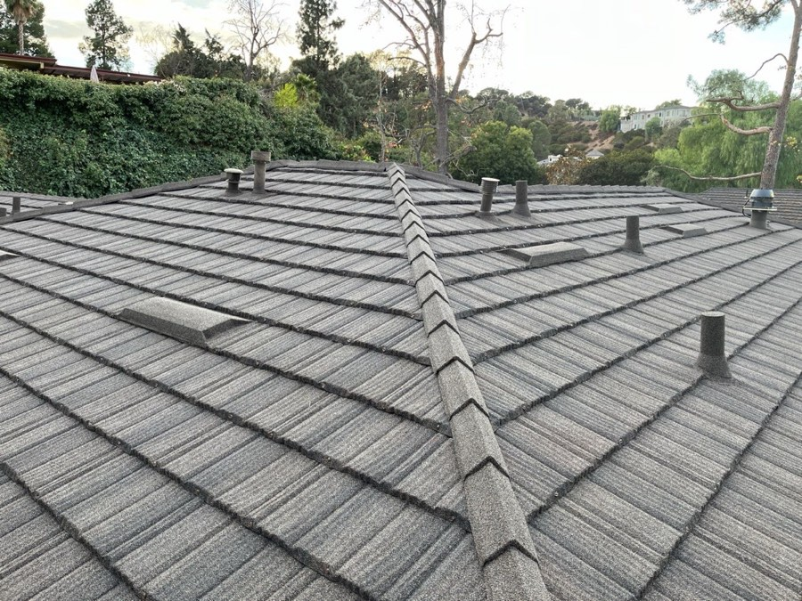
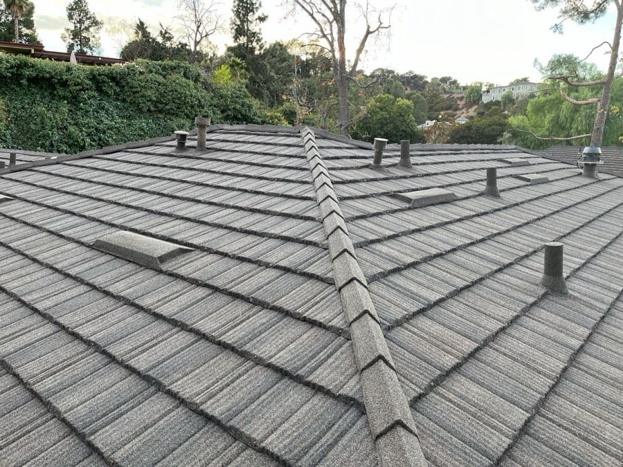

Send it over and we'll compare it with yours side by side, scope, materials, warranty, permits, and cleanup, so you know what's actually included.
The bottom number rarely tells the whole story. The details do.
| What to compare | Why it matters |
|---|---|
| Same roof area / squares | One quote may measure less roof than the other. |
| Tear-off vs. layover | Going over an old roof is cheaper now, costlier later. |
| Underlayment type | The waterproof layer under your shingles. Quality varies a lot. |
| Flashing (new vs. reused) | Old reused flashing is a common leak point. |
| Ventilation | Poor ventilation shortens roof life and can void warranties. |
| Decking / plywood assumptions | Is bad wood replacement included, or a surprise add-on later? |
| Permit handling | Is the permit pulled and included, or left to you? |
| Cleanup & magnetic nail sweep | Protects your yard, pets, and tires. |
| Photo documentation | Do you get photos of the work, or just take their word for it? |
| Warranty path | Workmanship AND manufacturer material warranty, in writing. |
| Change-order terms | What happens, and what it costs, if they find more once they start. |
| License & insurance | Licensed, bonded, insured, and verifiable. |
If you have another roof quote, send it over. We'll compare roof area, scope, materials, warranty path, permits, and cleanup side by side, so you know what's actually included.
A quick guide so nothing feels confusing.
Your proposal includes photos of your actual roof. Look here first, this is what we found and why we're recommending what we are. You're seeing your roof the way we see it.
The scope is the list of exactly what we'll do: tear-off, underlayment, flashing, ventilation, cleanup, and more. This is where roof quotes really differ.
You may have a few options (often Silver, Gold, Platinum). They typically differ by material, warranty length, and system. Higher tiers usually mean a longer-lasting system and stronger warranty path.
Permits, disposal, cleanup, and documentation should be spelled out. If something isn't listed, ask, on any roofer's proposal.
The goal isn't to rush you. It's to make sure you have the right information before choosing a roofer.
Workmanship and material coverage, in plain English.
| Type | What it covers |
|---|---|
| Workmanship warranty | The installation, the labor, how the roof was put on. This comes from the roofer. |
| Manufacturer material warranty | The shingles/material themselves. This comes from the manufacturer (like GAF). |
The strongest manufacturer warranties are only available when the full system is installed correctly by a certified contractor. A cheap install can actually void the material warranty, so the lowest bid can cost you coverage.
Poor ventilation traps heat and moisture and shortens roof life. Reused or sloppy flashing is one of the most common leak points. Both affect whether your roof, and your warranty, actually last.
The goal isn't to rush you. It's to make sure you have the right information before choosing a roofer.
A simple overview. Your rep confirms what applies.
Specific terms, monthly amounts, and approvals are handled personally by your Green Ladder rep, that way you get accurate answers for your exact situation rather than a guess.
The goal isn't to rush you. It's to make sure you have the right information before choosing a roofer.
From final review to the warranty packet.
| 1. Final scope review | We confirm the plan with you before anything is ordered. |
| 2. Agreement & signature | Clear paperwork before work begins. |
| 3. Material ordering | We order your selected roof system. |
| 4. Permits | We handle permitting where required. |
| 5. Scheduling | We coordinate scheduling with you and check the weather window. |
| 6. Property protection | We protect landscaping, AC units, and surfaces before we start. |
| 7. Tear-off & install | Our crew removes the old roof and installs the new system. |
| 8. Cleanup & magnetic sweep | We leave the property cleaner than we found it. |
| 9. Final photo documentation | You get photos of the completed work. |
| 10. Warranty packet & closeout | Your warranty paperwork, all in one place. |
The goal isn't to rush you. It's to make sure you have the right information before choosing a roofer.
Shingle, tile, metal, and flat-roof systems.
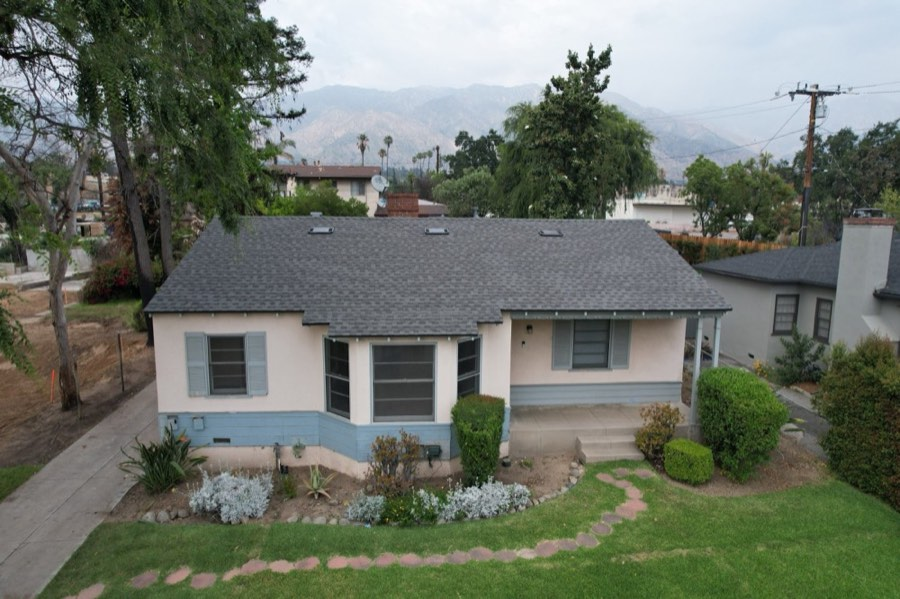
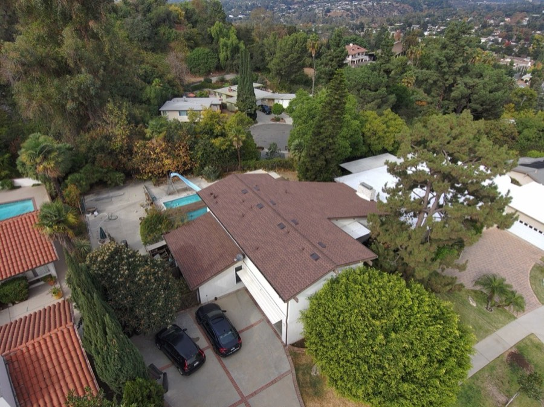
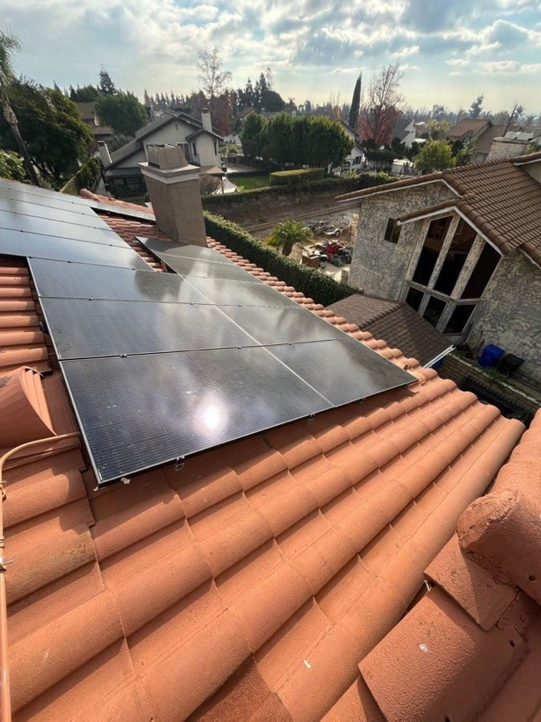
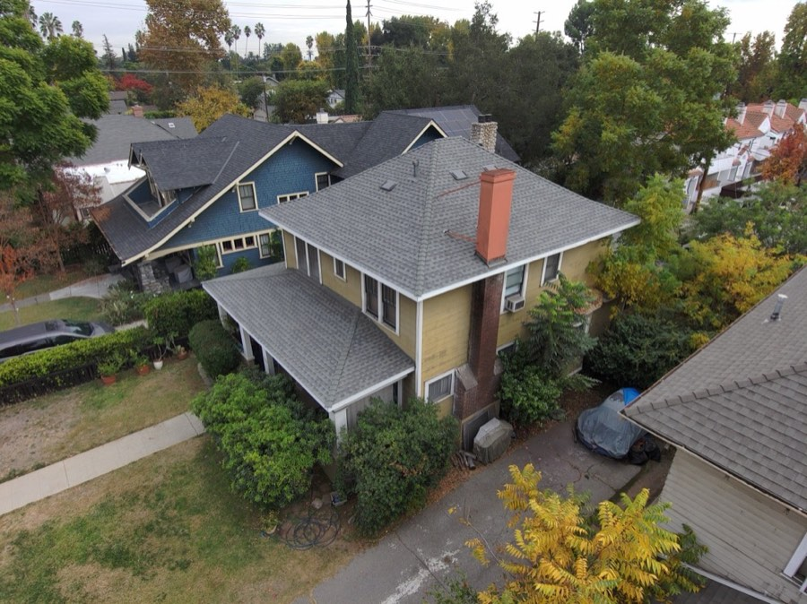
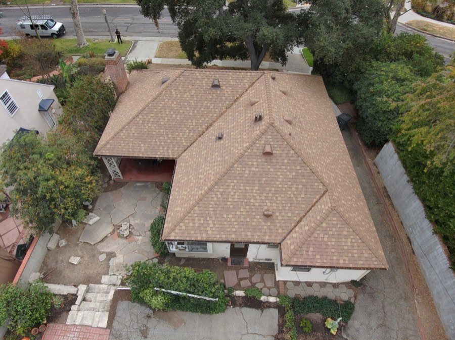
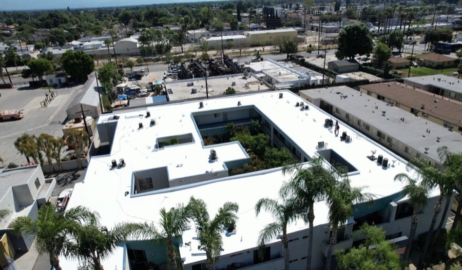
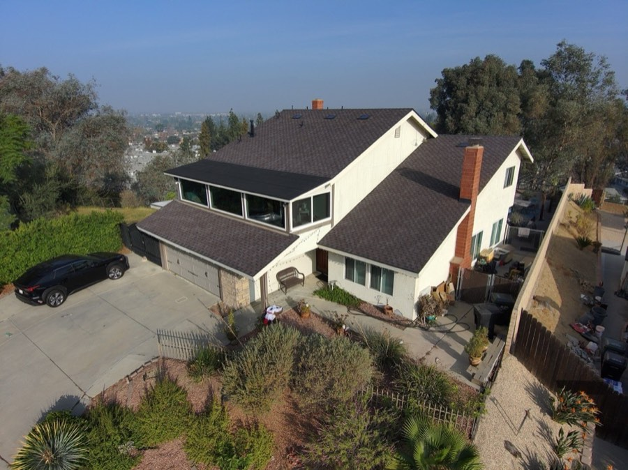
We'll document yours the same way, with a free photo inspection and a report you keep.
Bring these to any roofer, including us.
Ask for the license number and a certificate of insurance. A real company hands these over without hesitation. If they dodge, that tells you something.
Underlayment, flashing, ventilation, tear-off, decking, permits, and cleanup should all be spelled out. Vague scopes are where change-orders and surprise costs hide.
There are two: the workmanship warranty (from the roofer) and the manufacturer material warranty (from the maker). Get both in writing, and ask if your install qualifies for the manufacturer's best coverage.
Photo documentation means you can see what was done, not just take someone's word for it. It's also proof for insurance or a future sale. Ask if it's included.
Bad decking or hidden damage is common once the old roof comes off. Ask exactly how that's handled and what it costs, before it becomes a surprise.
The goal isn't to rush you. It's to make sure you have the right information before choosing a roofer.
What sets us apart on a roof you'll live under for decades.
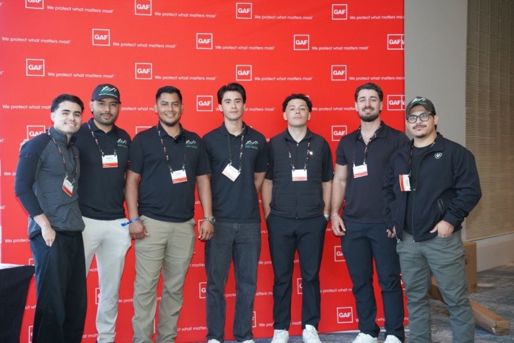
We're a GAF Master Elite contractor, a status held by only the top 2% of roofing contractors nationwide. It's not something you can buy. It requires proven experience, proper licensing and insurance, and a track record of quality. It also may allow eligible roof systems to qualify for enhanced manufacturer warranty options.
We photo-document our work so you can see what was done. No guessing, no taking our word for it. The report is yours to keep.
Fully licensed in California, bonded, and insured. We'll show you the paperwork before you ever sign.
We work throughout Pasadena, Altadena, Arcadia, San Marino, and the surrounding San Gabriel Valley. We're not a fly-by-night crew, we're the company you'll see around town and can hold accountable.
From the first inspection to the final cleanup and warranty packet, we keep you updated through the process. We explain the scope and known assumptions before work begins.
The goal isn't to rush you. It's to make sure you have the right information before choosing a roofer.
A short, 10-minute walkthrough with the photos open. Text or call and we'll find a time that works for you.
Use our live scheduler to grab a time for your 10-minute proposal walkthrough, with the photos open. It takes about a minute.
Prefer to talk it through with a person? Text or call Alex and we will set it up.
A quick call is often the easiest way to get clear answers about your specific roof. We'll work around your schedule, mornings, afternoons, or evenings.